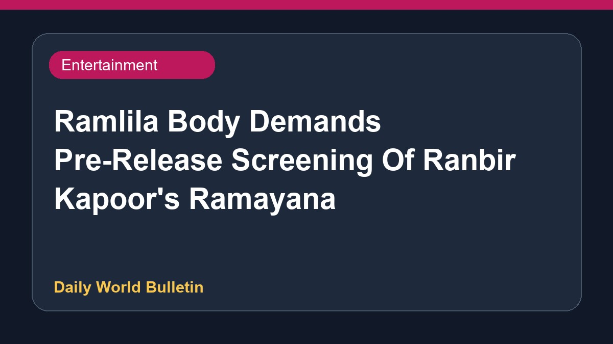

Ramlila Body Demands Pre-Release Screening Of Ranbir Kapoor's Ramayana

The Ramlila Mahasangh has demanded a special pre-release screening of the upcoming film 'Ramayana', starring Ranbir Kapoor as Lord Ram. Expressing dissatisfaction with his portrayal and calling it weak, the organisation has warned the filmmakers of protests if their demand is ignored. Several media reports highlight that the body wants to review the movie content before its public release. Further details regarding the official response from the filmmakers are currently limited.
Original source: Entertainment Sources
'Ranbir Kapoor's Portrayal Of Lord Ram Seems Weak': Ramlila Body Seeks Pre-Release Screening Of Ramayana - NDTV ↗
'Ranbir Kapoor's Portrayal Of Lord Ram Seems Weak': Ramlila Body Seeks Pre-Release Screening Of Ramayana - NDTV ↗